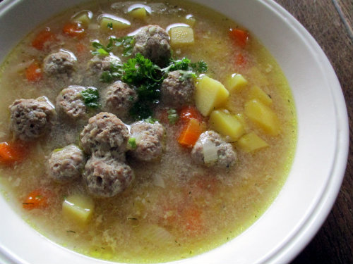

Recipe for meatball soup

Description
Meatball soup is a soup made using meatballs, simmered with various other ingredients.
In this recipe you will learn how to make the kind that Estonians love.
Ingredients
- Oil for frying
- 3 peeled carrots
- 100g piece of peeled celeriac or 2-3 stalks of celeriac (or both!)
- 1 leek (especially the white and light green parts)
- 2l broth or water
- 4-6 peeled potatoes
- 500g minced meat
- 1 egg
- 1 onion chopped and fried in oil
- Salt and black pepper
- Chopped fresh dill or parsley to garnish
Steps
- Chop the carrots, celery and leek, lightly fry in oil at the bottom of the pot.
- Add hot water or broth and cook on low heat for 10 minutes.
- Add the chopped potatoes and cook for another 10 minutes.
- To make meatballs, mix minced meat, egg, salt, pepper and chopped onion lightly fried in oil in a bowl.
- Mix until smooth, then form small meatballs using wet hands, taking about a teaspoon of the mince.
- Heat the water in a separate pot to a boil, add the meatballs and boil them until the meatballs rise to the surface.
- Then remove with a slotted spoon and add to the soup.
- When serving, sprinkle chopped dill, parsley, etc. on the soup.
Back to the homepage